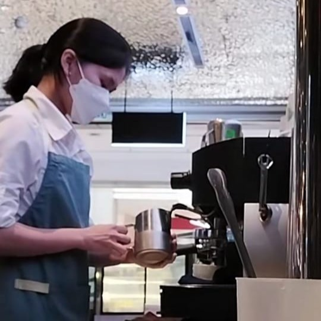
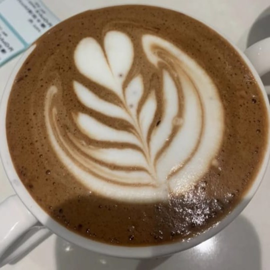
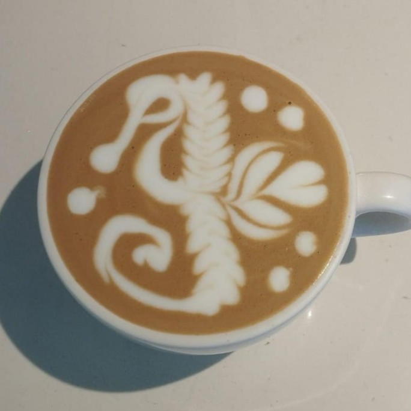
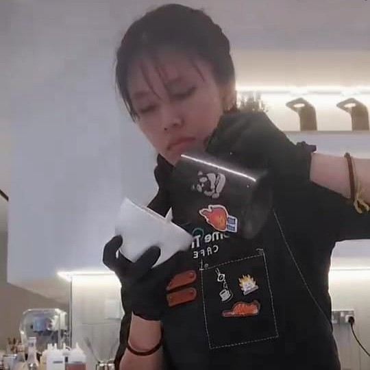
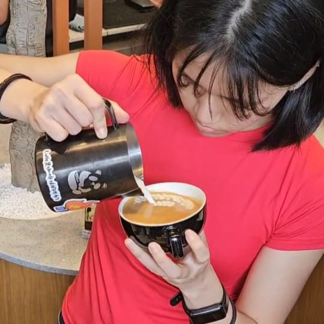
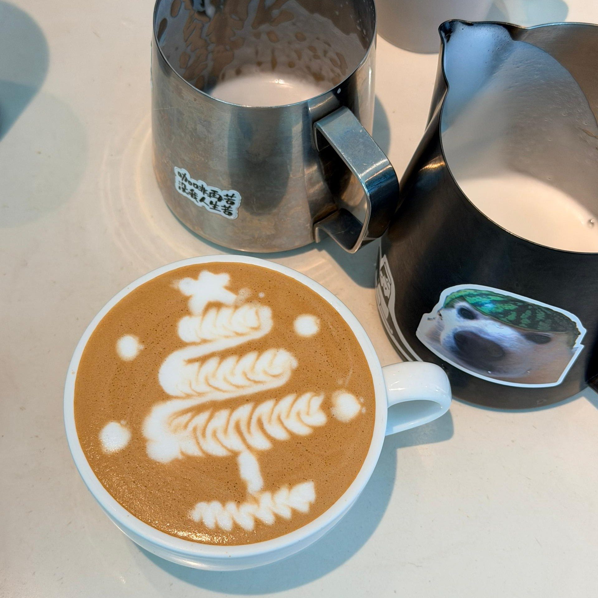

My journey started with a fascination for latte art. After finishing SPM, I found a part-time job as a barista, and with no expensive courses, I learned the basics by observing experienced staff and watching countless online videos.

Balancing foundation studies and part-time work, I practiced tirelessly. At first, my art was limited to simple tulips, but I never gave up and practiced every chance I got.

By my second year, I started experimenting with combo latte art. With persistence, I could create designs like seahorses, unicorns, dogs, and more. Every new pattern was a small victory.

Working as a barista allowed me to earn my own money, covering college fees, daily expenses, and sometimes even helping at home. It gave me independence and confidence in managing my life.

I also challenged myself outside my comfort zone by joining barista and latte art competitions. Although I didn’t win, I gained invaluable experience, met inspiring people, and discovered how competitive yet rewarding the coffee industry truly is.

Today, The BrewBook is a platform to share my journey and simplify café-style drinks for home brewers. I hope my experiences inspire others to follow their passions, practice patiently, and never give up.